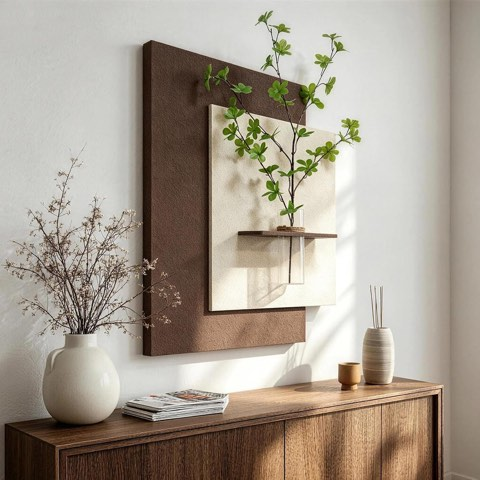
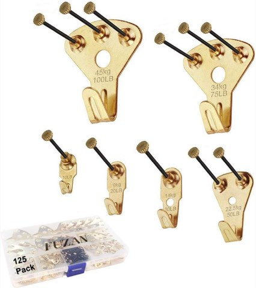

Store-bought wall art has its place, but a handmade piece brings something that mass production never quite replicates, genuine texture, an unrepeatable pattern, and a story behind how it actually got made.
None of these require formal art training.
What they require is a willingness to try, and a wall that is currently a little too empty for its own good.


3D Textured Neutral Abstract Plant Wall Art with Vase and Shelf, 22 x 28 Inch
Shop on Amazon
Heavy Duty Picture Hanging Kit, 125 Pcs, with Nails for Wood and Drywall
Shop on Amazon17 Handcrafted Wall Decor Ideas
1. Painted Rock Art
Smooth stones, hand-painted with detailed patterns, turn into a genuinely original piece once arranged together on a wall.
Mounted or simply grouped on a wooden board, the collection reads as intentional rather than like scattered craft supplies left out.
It is one of the most low-cost projects on this entire list, using materials that are often already sitting in a backyard or at a nearby trail.
2. Handmade Mirror Mosaics
Broken tiles, seashells, or small pieces of glass, arranged around a simple mirror, build a mosaic frame that is genuinely one of a kind.
The mosaic pattern adds a playful, whimsical quality, while the mirror itself still does the practical work of reflecting light around the room.
It is a strong weekend project for anyone who already has a stash of broken tile or beach-collected shells looking for a use.
3. DIY Leather Wall Art
Leather, cut and shaped into leaves, feathers, or clean geometric forms, brings a modern, tactile quality to a wall that paper and fabric cannot quite match.
The material itself photographs beautifully, with light catching its texture differently depending on the angle it is viewed from.
It adds a note of real refinement to a room, especially paired with simpler, more neutral decor around it.
4. Ceramic Wall Plates
Hand-painted or textured ceramic plates double easily as wall art, repurposing something functional into something decorative instead.
Grouped together on a gallery wall, a set of plates creates an arrangement that feels collected and intentional rather than matched from a single set.
It is an especially good option for anyone who already has a few mismatched ceramic pieces sitting unused in a cabinet somewhere.
5. Hand-Stenciled Wall Panels
Stencils and paint make it simple to build a repeating pattern directly onto a canvas or wooden panel.
It is one of the more approachable ways to add real artistic detail to a wall without needing any freehand painting skill.
A single stenciled panel can anchor a whole gallery wall, or work well entirely on its own as a standalone piece.
6. Driftwood Wall Sculptures
Driftwood, arranged into an abstract shape, a heart, or a star, brings a naturally beachy quality to a wall without any extra styling needed.
It suits a seaside or rustic-leaning room especially well, where the material itself already matches the broader aesthetic.
The irregular, weathered texture of real driftwood is what makes each finished piece feel genuinely one of a kind.
7. Fabric Wall Art
Stretching a bold or patterned fabric over a simple wooden frame creates an instant, striking focal point for very little cost.
A vintage linen or a bold modern print both work well, depending on the direction the rest of the room is already leaning.
It is one of the fastest handmade wall art projects to finish, with most of the visual impact coming from the fabric choice itself.
8. Handmade Paper Quilling Art
Paper quilling turns small rolled and cut strips of paper into surprisingly intricate designs on a wall.
Framed once finished, a quilled piece reads as genuinely artistic and considerably more impressive than the simple materials would suggest.
It is a strong option for anyone drawn to fine detail work and a result that consistently draws a second look from guests.
9. Beaded Wall Hangings
Beads, sorted into either an intricate pattern or a loose fringe design, bring real shimmer and color onto a wall.
The way beads catch and scatter light gives a room a subtle sense of brilliance that flat decor does not manage on its own.
Bold color combinations here read as genuinely vibrant rather than overwhelming, especially in a room that otherwise stays fairly neutral.
10. DIY String Art
String art is approachable and still manages to look genuinely striking once it is finished and hung up.
A simple pattern of nails, wrapped with bright string, can form a mountain range, an animal silhouette, or anything else that fits the room's style.
It is easy to update later too, restringing a finished piece in a new color refreshes it without starting completely over from scratch.
11. Clay Wall Sculptures
Air-dry clay, shaped by hand or with simple molds, builds genuine three-dimensional pieces that dry naturally without needing a kiln.
Geometric forms, leaf shapes, or fully abstract silhouettes all work well as a starting point for a first attempt.
Painted once dry, the finished sculpture adds a distinctly modern, artistic edge that flat wall art cannot quite replicate.
12. Hand-Embroidered Hoops
Embroidery hoops display beautifully on a wall, whether the design inside is a detailed floral pattern or a short, meaningful phrase.
The handmade quality comes through immediately, adding a classic, slightly nostalgic touch to the room around it.
Their round frames work equally well in a newer home or an older one, which makes them one of the more flexible crafts on this list.
13. Pressed Flower Frames
Pressed flower art captures something genuinely delicate and turns it into a lasting piece of decor on the wall.
Arranging pressed blossoms and leaves inside a glass frame gives the finished piece a refined, almost scientific-journal quality.
It is an especially strong fit for anyone who genuinely loves the outdoors and wants that appreciation reflected somewhere in the home.
14. Woven Tapestries
A woven tapestry adds color and real adaptability to a wall, whether it is a classic pattern or something made entirely from scratch on a loom.
The fabric itself brings richness and a sense of coziness that flatter, more rigid wall art does not quite achieve on its own.
A tapestry also softens a room acoustically in a small way, which is a quiet bonus beyond the visual impact.
15. Wood Slice Wall Art
Wood slice art brings the outdoors directly onto a wall, using the material's own natural grain as the main visual interest.
Arranging slices into a mandala or sunburst pattern highlights the organic texture already present in the wood itself.
The earthy tones and natural imperfections add real warmth and a rustic quality that manufactured decor rarely replicates.
16. Hand-Painted Canvas Art
A hand-painted canvas is the most direct route to a wall piece that is genuinely one of a kind.
Abstract splashes, a peaceful scene, or bold geometric shapes all work, whatever direction fits the room becomes the obvious focal point once it is hung.
There is no need for formal training here.
The appeal of a handmade piece comes from its specificity, not its polish.
17. Macramé Wall Hangings
Macramé brings genuine texture and a relaxed, boho quality to a wall in a way few other crafts manage.
Basic knots, repeated and layered, build intricate patterns on their own, and a neutral tone like beige or gray keeps the finished piece versatile.
Hung above a bed or a sofa, a macramé piece sets a laid-back, artistic tone for the whole room without demanding much else around it.
Final Thoughts
Handcrafted wall decor adds something no catalog purchase ever quite manages, genuine personality, visible effort, and a piece that could not be bought the same way twice.
Pick whichever craft actually fits the materials already on hand, or the free afternoon available to start one.
A wall that is been waiting for the right piece is usually worth the wait for something made rather than simply bought.